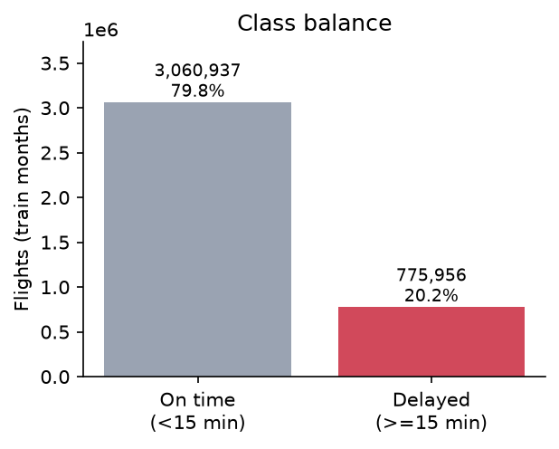
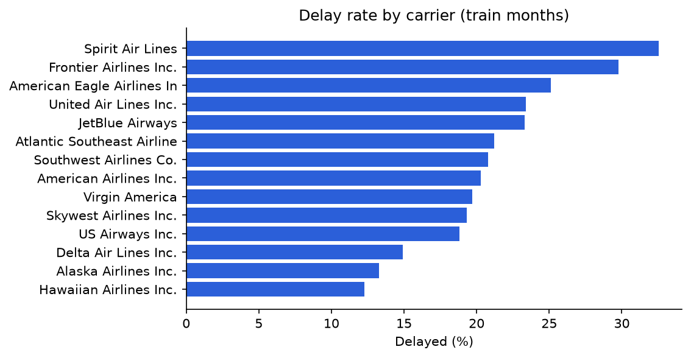

The question
Using only schedule-time features — carrier, route, scheduled departure hour, distance and calendar variables — how accurately can machine-learning models predict whether a US domestic flight in 2015 will arrive more than 15 minutes late in a later, unseen time period, compared with a simple baseline?
- One row is
- one scheduled US domestic flight leg in 2015
- We predict
ARRIVAL_DELAY ≥ 15 min→ delayed (the US BTS definition of a late arrival)- Prediction is made
- at scheduling time, before departure
- So we may use
- carrier, origin, destination, scheduled departure and arrival times, planned duration, distance, calendar fields
- We exclude
- cancelled and diverted flights — they have no arrival delay to label
- The claim is
- an operational risk estimate, not a causal explanation
Because cancelled and diverted flights are dropped, every number on this page applies to flights that actually operated. A flight cancelled in a snowstorm never enters our data, so we are not predicting disruption in general — only lateness among flights that flew.
The data
US Department of Transportation Flight Delays and Cancellations
for 2015, published on Kaggle as
usdot/flight-delays.
One row per flight, plus small lookup tables for carriers and airports.
Class balance

What the schedule already tells you
Delay risk climbs steadily through the day. An early-morning departure starts the day on an aircraft that is already in position; an evening departure inherits every delay that happened upstream of it.



Data-quality audit
Two problems in this dataset would quietly corrupt the results if left alone. We checked for both in code rather than assuming.
Preprocessing, and how we avoid leakage
This dataset is a trap for exactly the mistake it looks like it rewards. It ships with columns that are only known during or after a flight: the actual departure delay, taxi times, air time, and the airline's own breakdown of delay causes. Feed those to a model and it scores brilliantly — because it is reading the answer, not predicting it. A model that needs to know the departure delay in order to predict the arrival delay is useless at the moment you would actually want it.
So we keep an allow-list, not a drop-list. A column is
unusable unless it is explicitly named as available at scheduling time,
and a function called assert_no_leakage() raises an error
before every single model fit. Leakage becomes a crash instead of a
flattering number.
Used — known at scheduling time
Refused — known only during or after the flight
Rows removed, and why
Transformations
- Derived from the schedule: departure and arrival hour from the published
hhmmtimes, and a weekend flag. Pure arithmetic on fields printed on the ticket, so nothing is learned and nothing can leak. - Categoricals: one-hot for logistic regression, integer codes for the tree models. Airports seen rarely in training are pooled, because a handful of flights cannot support an estimate.
- Clock hours enter logistic regression as sine and cosine, so 23:00 sits next to 00:00 instead of 23 units away from it.
- Scaling for logistic regression only; trees split on order and do not care.
- Every transformer is fitted on the training rows alone and then applied unchanged to validation and test. The median used to fill missing scheduled durations is the training median.
Baseline and models
Start with the model that cannot be beaten on accuracy and is worthless anyway: always predict “on time”. It is right about four times in five, and it never once identifies a delayed flight. That is the whole reason accuracy is not our headline metric, and why this baseline sits in every comparison below.
How we evaluate
A random train/test shuffle would let the model learn from flights that departed after the ones it is graded on — and in a dataset where delays cascade through a day, that is a real advantage it would never have in practice. We split by calendar instead, which mirrors the actual task: learn from the past, predict a future period.
Results
95% confidence intervals come from 200 bootstrap resamples of the test set. Lift is PR-AUC divided by the base rate: it is what the model adds over knowing nothing.
Is the best model actually better?
Curves

Which schedule fields carry the signal?

The probabilities are not calibrated — and that matters

Try it yourself
Score a flight
Pick a real route and a departure time, exactly as a scheduler would see it. The page computes the logistic-regression model's output in your browser from its published coefficients — the same arithmetic the Python model does, verified to agree with scikit-learn to within 1e-6.
Move the decision threshold
A probability is not a decision. To act, you need a cut-off — and the cut-off is a trade-off with no free lunch: catch more real delays and you raise more false alarms. Drag the slider and watch what each choice costs, on the real test set.
Where the model goes wrong
Representative mistakes
The most confident errors in both directions, drawn from the test set. They are instructive: nothing in the schedule distinguishes these flights from their neighbours, because what separated them was weather or a late inbound aircraft — neither of which we can see.
Limitations
- No weather. One of the largest real causes of delay is absent from the dataset. This is the ceiling on everything above.
- No inbound-aircraft state. The single best predictor of a delayed departure is the aircraft arriving late from its previous leg, and at scheduling time that is unknowable.
- Uncalibrated probabilities. Scores are relative risk, not probabilities. See the calibration section.
- One year. 2015 schedules, fleets and carriers. We make no claim about other years.
- Operated flights only. Cancellations and diversions are excluded by construction.
- October is missing entirely because of the airport-code defect, so validation rests on a single month, September — a quiet one.
- An atypical test period. November and December carry holiday traffic, and performance measurably degraded there.
- One million training rows, not 3.8 million, so the tree models would finish on a laptop. All models share the same rows, so the comparison is fair, but more data might have helped them.
- Association, not causation. Evening flights are riskier; evening does not cause delay. The schedule is a proxy for accumulated upstream disruption.
Conclusion
Reproducing this
- Clone the repository.
- Download the three CSVs from Kaggle and put them in a
Dataset/folder next to the repository. We do not redistribute the raw data. python -m venv .venv, activate it, thenpip install -r requirements.txt. The exact versions behind every number here are pinned inrequirements.lock.txt.python src/config.pyto confirm the paths resolve.- Run the five steps in order:
step01_audit_eda→step02_preprocess_split→step03_models→step04_export_model→step05_final_eval.
The split is defined in code, the seed is fixed at 42, and every figure and number on this page is read from a JSON file that those scripts wrote. Setup, data access and our AI-use disclosure are in the repository README.